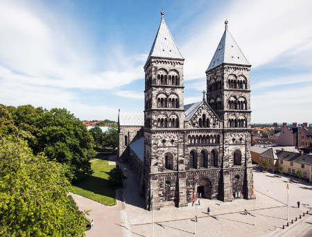
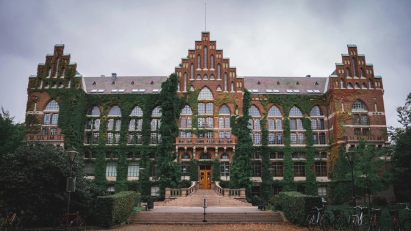
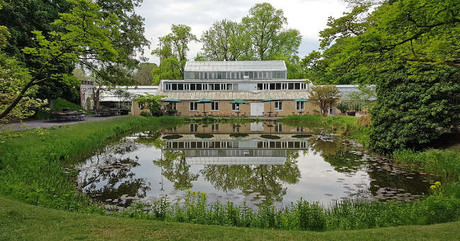

Lunds domkyrka

En av Sveriges mest imponerande kyrkor och hjärtat i Lunds historia. Domkyrkan byggdes redan på 1100-talet och är känd för sitt vackra astronomiska ur och den mystiska kryptan. Här får du höra berättelserna om helgon, kungar och tidens gång – mitt i den storslagna stenkatedralen.
Lunds universitet och Lundagård

Lunds universitet grundades 1666 och har präglat stadens identitet i över 350 år. I området kring Universitetshuset och Akademiska Föreningen promenerar vi genom Lundagård – en vacker park där historia och nutid möts bland statyer, studenter och gamla fasader.
Botaniska trädgården

En grön oas mitt i staden med över 7 000 växtarter från hela världen. Här berättar vi om trädgårdens historia, forskningen som bedrivits här och varför den blivit en favoritplats för både lundabor och besökare. På sommaren blommar parken i full prakt – en perfekt avslutning på turen.